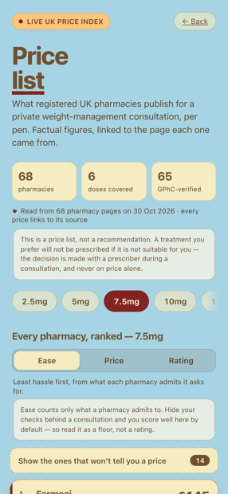
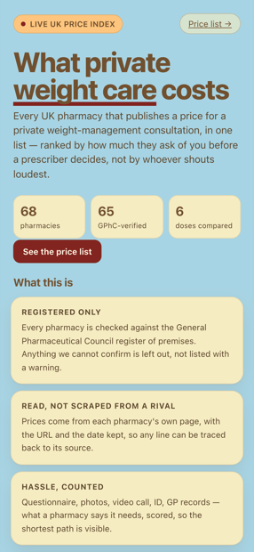

Independent UK price index
Every published price. One list. No paid placement.
68 pharmacies sell the same pens. They publish the prices in six different places, and half of them won't show you a figure until you've finished a consultation. GLPenFind reads those pages, puts the numbers side by side, and tells you what each one costs you in hassle before you start.
The price is only half the answer.
Two pharmacies can quote the same figure and feel nothing alike to use. One takes a two-minute questionnaire. Another wants a photo of you on a scale, then a video, then your GP's permission — and only then mentions a price.
So every pharmacy here carries two numbers: what it charges, and how easy it makes ordering. We show both, and we don't hide the second one in the small print.
What we don't do
- We don't take money from pharmacies.Nobody can buy a higher position. The order is the data, not a bid.
- We don't sell anything.No account, no checkout, no orders. We link out to the pharmacy's own page and stop there.
- We don't give medical advice.Whether a treatment is right for you is a question for a prescriber, not a price list.
How Ease is scored
Ease starts at 100 and loses points for each thing a pharmacy makes you do before it will quote you. We only count steps a pharmacy states publicly — so treat the score as a floor, not a rating.
| What they ask for | Points off |
|---|---|
| An online consultation or questionnaire | −10 |
| A photograph — of you, your ID, or the box | −15 |
| Another photograph on repeat orders | −15 |
| A video, or a live verification call | −20 |
| Government ID uploaded | −10 |
| GP confirmation or a letter | −10 |
| A slow or manual approval step | −5 |
A pharmacy that publishes nothing about its process scores nothing. We'd rather show a gap than invent a number.
Every pharmacy is checked against the register
A price is only useful if the seller is real and regulated. We audited 87 providers against the General Pharmaceutical Council register: 68 survived. Four were removed because we couldn't tie them to a registered premises, and six were rescued after a second, closer look.
Where a pharmacy publishes its own registration number, we show it and link straight to the register entry. Where it doesn't, we say so rather than guess.
What it looks like


Honest limits
- Prices move without telling us. Every figure carries the date we read it and a link to the page it came from. Check before you buy.
- Some prices stay hidden. Where a pharmacy won't publish a figure, we say why — gated, unreadable, or simply not published — instead of leaving a blank row.
- We are not a pharmacy. GLPenFind doesn't dispense, prescribe, advise or sell. We are a list, kept carefully.